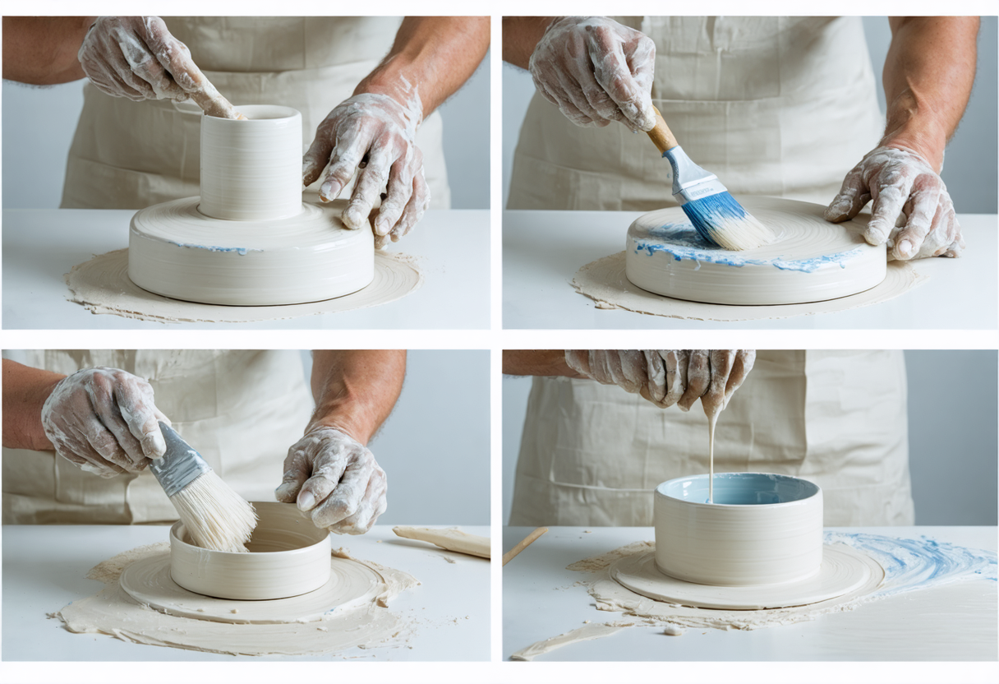
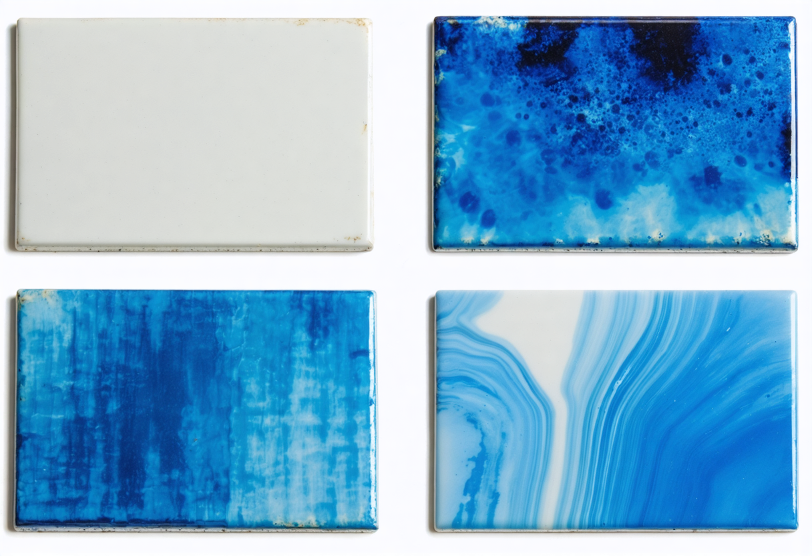
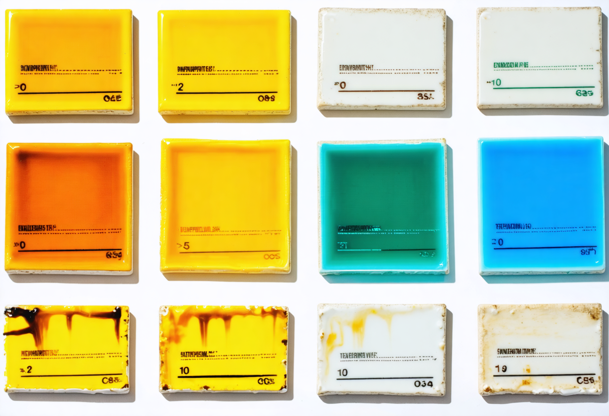
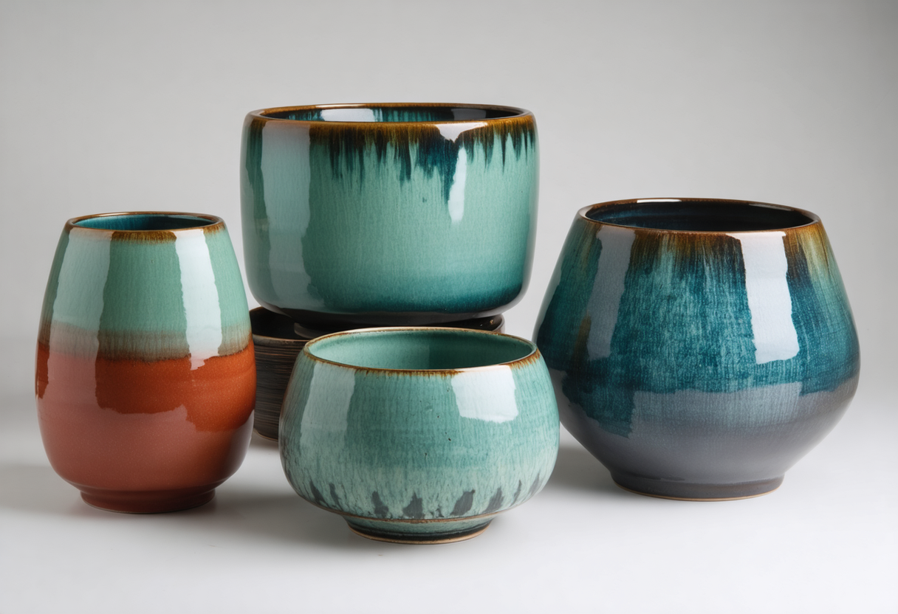

유약 시유 기법: 도자기 표면에 예술을 입히는 섬세한 과정
유약 시유는 도자기 제작 과정에서 완성도를 결정짓는 매우 중요한 단계입니다. 단순히 유약을 바르는 행위를 넘어, 원하는 결과물을 얻기 위해 유약의 특성, 기물의 형태, 그리고 다양한 도구와 기술을 이해하고 활용해야 합니다.
시유 전 준비 작업
어떤 시유 기법을 사용하든, 성공적인 유약 시유를 위해서는 철저한 준비가 필요합니다.
안전 장비 착용
유약 재료는 미세한 분말 형태로 호흡기 질환을 유발할 수 있으므로, 반드시 방진 마스크, 보안경, 고무 장갑을 착용하고 작업해야 합니다. 작업 공간은 환기가 잘 되는 곳이어야 합니다.
유약 준비
- 충분히 휘젓기: 유약은 시간이 지나면 가라앉기 쉬우므로, 사용 전에 바닥까지 잘 저어 균일한 농도를 만들어야 합니다. 전동 교반기나 손으로 천천히 저어주는 것이 좋습니다.
- 체에 거르기: 덩어리진 유약이나 불순물을 제거하기 위해 80~100mesh 정도의 고운 체에 걸러 사용하는 것이 좋습니다. 이렇게 하면 시유 시 표면이 매끄럽게 처리됩니다.
- 점도 조절: 시유 기법에 따라 유약의 점도를 적절하게 조절해야 합니다. 너무 묽으면 흘러내리고, 너무 되직하면 고르게 발리지 않습니다.
- 사용 중에도 계속 저어주기: 시유 작업 중에도 유약이 침전되지 않도록 주기적으로 저어주는 것이 중요합니다.
기물 준비
- 깨끗하게 닦기: 초벌된 기물(기벽) 표면에 먼지, 기름, 손자국 등이 남아있으면 유약이 제대로 접착되지 않거나 얼룩이 생길 수 있습니다. 깨끗한 물에 적신 스펀지나 부드러운 천으로 표면을 꼼꼼하게 닦아줍니다.
- 건조시키기: 물로 닦은 기물은 완전히 건조시킨 후 시유해야 합니다. 표면에 수분이 남아있으면 유약이 고르게 흡수되지 않을 수 있습니다.
- 기공 상태 확인: 기물이 너무 건조하면 유약을 급격하게 흡수하여 두껍게 발릴 수 있고, 너무 습하면 유약이 흘러내리기 쉽습니다.
주요 유약 시유 기법
다양한 유약 시유 기법이 있으며, 각 기법은 특정한 효과나 작업 방식에 적합합니다.
담금법
붓기법
붓칠법
담금법 (Dipping)
유약 통에 기물을 완전히 또는 부분적으로 담갔다가 꺼내는 가장 일반적인 시유 방법입니다. 비교적 균일한 두께로 유약을 입힐 수 있으며, 대량 생산에 용이합니다.
단계별 과정:
- 유약을 충분히 저어줍니다.
- 기물을 잡기 편한 도구(집게, 꼬챙이 등)를 이용하여 안전하게 잡습니다.
- 일정한 속도로 유약 통에 담급니다. 이때 기물 내부에 공기가 갇히지 않도록 주의합니다.
- 원하는 두께에 따라 담그는 시간을 조절합니다. 담그는 시간이 길수록 유약이 두껍게 발립니다.
- 일정한 속도로 천천히 꺼냅니다.
- 여분의 유약이 흘러내리도록 잠시 기다립니다.
- 바닥면이나 유약이 묻으면 안 되는 부분은 깨끗하게 닦아냅니다.
팁: 담그는 각도와 속도를 일정하게 유지하는 것이 중요합니다. 기물의 크기와 형태에 맞는 유약 통을 사용하는 것이 좋습니다.
붓기법 (Pouring)
유약을 용기에 담아 기물 위로 흘려 붓는 방법입니다. 넓은 면적에 빠르게 시유할 수 있으며, 흘러내리는 효과를 연출하기에 좋습니다.
단계별 과정:
- 유약을 충분히 저어줍니다.
- 기물을 받침대 위에 올려놓고, 흘러내리는 유약을 받을 용기를 준비합니다.
- 유약을 천천히, 일정한 속도로 기물 위로 부어줍니다. 기물을 회전시키면서 전체 면적을 덮을 수 있습니다.
- 원하는 두께와 효과를 고려하여 유약의 양과 붓는 속도를 조절합니다.
- 여분의 유약이 충분히 흘러내리도록 기울여줍니다.
- 바닥면 등 불필요한 부분의 유약을 닦아냅니다.
팁: 다양한 각도와 속도로 유약을 부어 독특한 흐름 효과를 연출할 수 있습니다. 여러 종류의 유약을 번갈아 부어 층이 지는 효과를 낼 수도 있습니다.
붓칠법 (Brushing)
붓을 사용하여 유약을 얇게 여러 번 덧칠하는 방법입니다. 섬세한 표현이나 특정 부분에만 유약을 칠할 때 유용합니다.
단계별 과정:
- 유약을 충분히 저어줍니다.
- 적절한 크기와 종류의 붓을 선택합니다 (부드러운 털의 넓은 붓은 넓은 면적에, 가는 붓은 섬세한 표현에 적합).
- 붓에 적당량의 유약을 묻힙니다 (너무 많이 묻히면 흘러내릴 수 있습니다).
- 기물 표면에 붓 자국이 남지 않도록 부드럽고 일정한 방향으로 칠합니다.
- 원하는 두께를 얻기 위해 여러 번 덧칠합니다. 각 층이 살짝 마른 후에 다음 층을 칠해야 합니다.
- 바닥면 등 불필요한 부분의 유약을 닦아냅니다.
팁: 붓을 사용하기 전에 물에 살짝 적셔주면 유약이 더 잘 발립니다. 여러 번 얇게 덧칠하는 것이 한 번에 두껍게 칠하는 것보다 균일한 결과를 얻을 수 있습니다.
분무법과 특수 시유 기법
분무법 (Spraying)
에어 컴프레서와 스프레이 건을 사용하여 유약을 미세한 입자로 분사하여 입히는 방법입니다. 넓고 복잡한 형태의 기물에 균일하게 유약을 입히거나, 섬세한 색상 표현, 그라데이션 효과 등을 연출하는 데 효과적입니다.
단계별 과정:
- 유약을 충분히 저어준 후, 스프레이 건 노즐에 막힘이 없도록 더 고운 체(120mesh 이상)에 걸러줍니다.
- 스프레이 부스를 설치하고 환풍기를 작동시키는 등 안전한 작업 환경을 조성합니다.
- 스프레이 건의 공기압과 유약 분사량을 적절하게 조절합니다 (연습이 필요합니다).
- 기물과 스프레이 건의 거리를 일정하게 유지하면서, 얇게 여러 번 분사합니다. 기물을 회전시키면서 전체 면적을 고르게 덮습니다.
- 원하는 두께가 될 때까지 반복하여 분사합니다. 각 층이 살짝 마른 후에 다음 층을 분사하는 것이 좋습니다.
- 작업 후에는 스프레이 건을 깨끗하게 청소합니다.
팁: 마스크, 보안경, 장갑 착용은 필수입니다. 일정한 거리와 속도로 움직이면서 분사해야 균일한 결과를 얻을 수 있습니다.
특수 시유 기법
흘리기 기법
스펀지 기법
왁스 방염 기법
흘리기 (Trailing) 기법
흘리기 기법은 좁은 주입구(노즐)가 있는 도구(예: 유약 흘리기 병, 스포이트, 튜브)를 사용하여 유약을 선이나 점의 형태로 흘려내려 장식하는 방법입니다. 섬세한 선 작업, 윤곽 강조, 반복적인 점무늬 등을 표현하는 데 효과적입니다.
단계별 과정:
- 유약 준비: 흘리기에 적합한 농도로 유약을 준비합니다. 너무 묽으면 번지고, 너무 되직하면 잘 나오지 않으므로 적절한 점도를 찾는 것이 중요합니다.
- 도구 준비: 유약 흘리기 병이나 스포이트 등에 유약을 채웁니다. 노즐의 크기에 따라 흘러나오는 유약의 굵기가 달라집니다.
- 흘리기 작업: 도구의 끝을 기물 표면 가까이에 대고 일정한 압력으로 유약을 짜내면서 원하는 선이나 점을 그립니다.
- 건조: 흘린 유약이 번지지 않도록 충분히 건조시킵니다.
팁: 연습용 판에 먼저 연습하여 유약의 흐름과 도구 사용법을 익히는 것이 좋습니다. 다양한 크기의 노즐을 사용하여 선의 굵기를 조절해 보세요.
스펀지법 (Sponging)
스펀지법은 천연 또는 인조 스펀지에 유약을 묻혀 기물 표면에 찍거나 문지르면서 독특한 질감이나 색상 변화를 표현하는 기법입니다. 자연스러운 얼룩 효과, 은은한 색조 변화, 또는 덧칠을 통한 깊이감 표현 등에 유용합니다.
단계별 과정:
- 유약 준비: 원하는 효과에 따라 유약의 농도를 조절합니다.
- 스펀지 준비: 스펀지를 물에 적신 후 물기를 꼭 짜냅니다. 너무 젖은 스펀지는 유약을 과도하게 흡수하여 원하는 효과를 내기 어렵습니다.
- 유약 묻히기: 스펀지에 유약을 살짝만 묻혀 칠하고, 너무 많은 양을 묻히지 않도록 합니다.
- 찍거나 문지르기: 유약을 묻힌 스펀지를 기물 표면에 가볍게 찍거나 문지르면서 유약을 입힙니다.
팁: 여러 색상의 유약을 번갈아 사용하여 자연스러운 혼색 효과를 낼 수도 있습니다.
왁스 방염법 (Wax Resist)
왁스 방염법은 녹인 왁스나 왁스 에멀젼을 사용하여 기물 표면의 특정 영역에 얇은 막을 형성시켜 유약이 묻지 않도록 하는 기법입니다. 선, 점, 그림 등 다양한 무늬를 표현하거나, 여러 번의 시유 과정에서 특정 영역을 보호하는 데 사용됩니다.
단계별 과정:
- 왁스 준비: 녹인 왁스(양초, 파라핀 등)를 사용하거나 시판되는 왁스 방염제를 준비합니다. 녹인 왁스를 사용할 때는 화상에 주의해야 합니다.
- 왁스 칠하기: 붓, 스펀지, 흘리기 병 등을 이용하여 원하는 무늬나 영역에 왁스를 꼼꼼하게 칠합니다.
- 건조: 왁스가 완전히 건조될 때까지 기다립니다.
- 유약 시유: 왁스를 칠한 부분 위를 포함하여 전체적으로 원하는 유약을 시유합니다.
- 소성: 가마에서 소성하면 왁스는 타서 없어지고, 왁스가 칠해졌던 부분에는 유약이 묻지 않아 무늬가 드러나게 됩니다.
팁: 여러 번 덧칠하여 왁스 막을 두껍게 하면 더욱 선명한 방염 효과를 얻을 수 있습니다.
긁어내기 (Sgraffito)
긁어내기 기법은 기물 표면에 유약을 칠한 후, 유약이 완전히 마르기 전에 날카로운 도구를 사용하여 유약층을 긁어내어 밑의 흙색을 드러내는 기법입니다. 선, 면, 질감 등 다양한 표현이 가능하며, 특히 대비되는 색상의 유약과 흙을 사용하면 더욱 효과적입니다.
단계별 과정:
- 유약 시유: 기물 표면에 원하는 색상의 유약을 적절한 두께로 시유합니다.
- 건조: 유약이 완전히 마르기 전, 손으로 만졌을 때 약간 촉촉한 상태가 될 때까지 건조시킵니다.
- 긁어내기: 바늘, 조각칼, 나무 막대 등 다양한 도구를 사용하여 유약층을 긁어내어 원하는 무늬나 그림을 표현합니다.
- 마무리: 긁어낸 부분의 유약 가루를 부드러운 붓으로 조심스럽게 털어냅니다.
팁: 긁어낼 부분을 미리 연필 등으로 스케치해두면 작업에 도움이 됩니다.
유약 시유 기법의 융합과 창조
여러 가지 시유 기법을 함께 사용하면 각 기법의 장점을 살리고 단점을 보완하여 더욱 흥미로운 결과를 얻을 수 있습니다.
기존 기법의 융합
- 담금법 + 붓칠법: 기물 전체를 담금법으로 기본적인 유약층을 입힌 후, 붓을 사용하여 특정 부분에 다른 색상의 유약을 덧칠하거나 섬세한 그림을 그릴 수 있습니다.
- 붓기법 + 흘리기: 넓은 면적은 붓기법으로 빠르게 시유하고, 흘리기 기법을 사용하여 강조하거나 장식적인 선을 추가할 수 있습니다.
- 분무법 + 왁스 방염법: 왁스 방염 기법으로 무늬를 만든 후, 분무법으로 유약을 고르게 입히면 선명한 대비 효과를 얻을 수 있습니다.
- 붓칠법 + 긁어내기: 대비되는 색상의 유약을 붓으로 칠한 후, 긁어내기 기법을 사용하여 밑색을 드러내 독특한 질감과 그림을 표현할 수 있습니다.
나만의 독창적인 기법 개발
기존의 기법들을 변형하거나 새로운 아이디어를 접목하여 자신만의 독창적인 시유 기법을 개발하는 것은 도예가로서의 개성을 드러내는 중요한 방법입니다.
- 도구의 변형: 기존의 붓, 스펀지 외에도 나뭇잎, 깃털, 헝겊, 롤러, 스탬프 등 다양한 재료를 도구로 활용하여 독특한 질감을 표현해 보세요.
- 유약의 물성 조절: 유약의 점도, 농도, 건조 속도를 의도적으로 조절하여 흘러내림, 뭉침, 갈라짐 등의 효과를 연출할 수 있습니다.
- 마스크 활용: 종이, 천, 레이스 등 다양한 소재로 마스크를 만들어 분무 시 특정 영역을 가리거나, 유약을 덧바를 때 경계를 만들 수 있습니다.
유의사항
- 계획성: 어떤 효과를 원하는지 명확히 설정하고, 각 기법을 어떤 순서와 방식으로 적용할지 미리 계획하는 것이 중요합니다.
- 테스트: 새로운 기법이나 조합을 시도할 때는 반드시 테스트 타일을 만들어 소성 결과를 확인해야 합니다.
- 유약의 호환성: 여러 종류의 유약을 함께 사용할 경우, 소성 온도 범위나 화학적 성분이 서로 호환되는지 확인해야 예상치 못한 결함을 방지할 수 있습니다.
- 안전: 새로운 재료나 방법을 사용할 때는 안전에 유의하고, 필요한 안전 장비를 착용해야 합니다.
유약 테스트와 기록: 성공적인 유약 사용의 비밀
새로운 유약을 개발하거나 기존 유약의 성능을 확인하기 위해서는 체계적인 테스트가 필수적입니다.
유약 테스트 방법과 절차 (상세 가이드)
유약 테스트는 도자기 작업의 성공률을 높이고 원하는 결과를 얻기 위한 필수적인 과정입니다. 새로운 유약을 사용하거나 기존 유약의 변형을 시도할 때, 최종 작품에 적용하기 전에 반드시 테스트를 거쳐 유약의 특성을 파악해야 합니다. 이 가이드에서는 유약 테스트의 단계별 방법과 절차를 자세히 설명합니다.
1. 테스트 타일 준비:
테스트의 정확성을 높이기 위해서는 실제 작품과 동일한 조건으로 테스트를 진행하는 것이 중요합니다.
- 흙 (Clay Body): 최종 작품에 사용할 흙과 동일한 종류의 흙으로 테스트 타일을 제작합니다. 흙의 성분에 따라 유약의 발색이나 접착력이 달라질 수 있습니다.
- 모양 및 크기: 테스트 타일은 다양한 정보를 기록하고 관찰하기에 적합한 크기와 모양으로 만듭니다. 일반적으로 손바닥만 한 크기(예: 5cm x 7cm)에 두께는 0.5cm ~ 1cm 정도가 적당합니다.
- 다양한 표면: 일부 타일은 매끄럽게, 다른 타일은 질감을 넣어 제작하여 유약이 표면에 따라 어떻게 반응하는지 관찰할 수 있습니다.
- 구멍: 타일 상단에 구멍을 뚫어 소성 후 걸어서 보관하거나 비교하기 용이하게 합니다.
- 개수: 각 유약 및 소성 조건에 대해 최소 3개 이상의 테스트 타일을 준비하는 것이 좋습니다. 다양한 시유 방법이나 두께 변화를 테스트할 수 있습니다.
- 표시: 유약을 바르기 전에 각 타일에 유약 이름 또는 번호, 테스트 날짜, 흙 종류 등 필요한 정보를 명확하게 표시합니다. 언더글레이즈 펜슬이나 날카로운 도구를 사용하여 긁어 표시하는 방법이 좋습니다. 소성 후에도 지워지지 않도록 꼼꼼하게 표시합니다.
- 초벌 소성: 제작된 테스트 타일은 최종 작품과 동일한 온도와 조건으로 초벌 소성합니다.
2. 시유 단계 문제:
담금 시 유약이 얼룩지게 발림:
- 발생 시점: 기물을 유약에 담갔다 뺐을 때.
- 특징: 유약이 고르게 덮이지 않고 특정 부분에만 많이 묻거나, 물결 모양의 얼룩이 생김.
- 숨겨진 원인:
- 기물 표면에 유분이나 먼지가 남아 유약의 접착을 방해했을 가능성.
- 유약의 점도가 너무 낮아 기물 표면에 고르게 흡수되지 못했을 가능성.
- 담그는 속도가 너무 빠르거나 불규칙했을 가능성.
- 단계별 해결 방안:
- 기물 세척: 시유 전 기물을 깨끗한 물로 닦거나 스펀지로 가볍게 문질러 표면의 이물질을 제거합니다. 심한 경우 알코올로 닦아냅니다.
- 유약 점도 확인: 유약의 점도를 적절하게 조절합니다 (약간 걸쭉한 농도가 적당).
- 균일한 속도 유지: 기물을 천천히, 일정한 속도로 유약에 담갔다가 빼냅니다.
- 회전 담금: 복잡한 형태의 기물은 담그는 동안 천천히 회전시켜 유약이 고르게 묻도록 합니다.
- 재발 방지 꿀팁: 시유 전 기물 표면을 깨끗하게 관리하고, 유약의 점도를 주기적으로 확인합니다.
붓칠 시 붓 자국이 심하게 남음:
- 발생 시점: 유약을 붓으로 칠했을 때.
- 특징: 붓의 결이 그대로 드러나 표면이 매끄럽지 못함.
- 숨겨진 원인:
- 붓에 너무 많은 양의 유약을 묻혀 칠했을 가능성.
- 유약의 점도가 너무 높았을 가능성 (마치 페인트처럼 뻑뻑함).
- 붓의 움직임이 섬세하지 못했거나, 붓 자국을 겹쳐 칠하는 기술이 부족했을 가능성.
- 유약이 너무 빨리 건조되어 붓 자국이 사라지기 전에 굳었을 가능성.
- 단계별 해결 방안:
- 적정량의 유약 사용: 붓에 적당량의 유약을 묻혀 칠하고, 너무 많은 양을 한 번에 바르지 않도록 합니다.
- 유약 점도 조절: 유약을 약간 묽게 하여 붓의 움직임이 부드럽도록 합니다.
- 붓 자국 겹쳐 칠하기: 붓 자국이 서로 1/2 이상 겹치도록 칠하고, 마지막에는 한 방향으로 가볍게 쓸어 표면을 정리합니다.
- 유약 건조 지연: 유약 건조 지연제를 소량 사용하거나, 습도가 높은 환경에서 작업하여 유약이 천천히 마르도록 합니다.
- 스펀지 활용: 붓칠 후 부드러운 스펀지로 표면을 가볍게 두드리거나 쓸어 붓 자국을 완화합니다.
- 재발 방지 꿀팁: 부드러운 붓을 사용하고, 유약의 점도를 적절히 유지하며, 붓칠 기술을 꾸준히 연습합니다.
분무 시 유약이 뭉치거나 흘러내림:
- 발생 시점: 분무기로 유약을 시유했을 때.
- 특징: 유약이 작은 방울 형태로 맺히거나, 특정 부분에 과도하게 뭉쳐 흘러내림.
- 숨겨진 원인:
- 분무기의 노즐이 막혔거나, 유약 입자가 너무 굵었을 가능성.
- 분무 압력이 너무 낮거나 높았을 가능성.
- 분무 거리가 너무 가깝거나 멀었을 가능성.
- 유약의 점도가 적절하지 않았을 가능성 (너무 묽거나 뻑뻑함).
- 단계별 해결 방안:
- 분무기 점검 및 청소: 분무기의 노즐을 청소하고, 유약 입자가 통과하기에 적절한 크기인지 확인합니다.
- 적정 압력 조절: 분무기의 압력을 제조사 권장 사항에 맞게 조절하고, 테스트 분사를 통해 적절한 압력을 찾습니다.
- 적절한 거리 유지: 기물과 분무기 사이의 거리를 약 20-30cm로 유지하고, 일정한 속도로 움직입니다.
- 유약 점도 조절: 분무기에 적합한 점도로 유약을 조절합니다 (일반적으로 담금 유약보다 약간 묽게).
- 여러 번 얇게 분사: 한 번에 두껍게 분사하기보다 여러 번 얇게 분사하여 유약이 고르게 쌓이도록 합니다.
- 재발 방지 꿀팁: 분무기를 사용 전후로 깨끗하게 관리하고, 유약의 점도를 분무기에 맞게 조절하는 연습을 합니다.
3. 소성 단계 문제:
유약 흐름 과다 (특히 고온 소성):
- 발생 시점: 소성 후 가마에서 꺼냈을 때.
- 특징: 유약이 기물 하단으로 심하게 흘러내려 뭉치거나, 가마 선반에 붙어 버림.
- 숨겨진 원인:
- 설정한 최고 소성 온도가 유약의 적정 온도보다 너무 높았을 가능성.
- 유약 레시피에 융제 비율이 과도하게 높거나, 알루미나 비율이 너무 낮았을 가능성.
- 유약을 너무 두껍게 시유했을 가능성.
- 소성 중 온도 상승 속도가 너무 빨랐을 가능성.
- 단계별 해결 방안:
- 소성 온도 재확인 및 조정: 유약 제조사 또는 레시피 제공자의 권장 소성 온도를 확인하고, 필요시 온도를 낮춥니다 (예: 10-20°C씩).
- 레시피 조정: 유약 레시피에서 융제 비율을 줄이거나, 알루미나 비율을 늘립니다. 특히 알칼리 융제 비율을 줄이고 알칼리 토금속 융제 비율을 늘리는 것을 고려해 봅니다.
- 시유 두께 조절: 유약을 얇게 시유하고, 특히 하단부에는 너무 많은 양이 묻지 않도록 주의합니다.
- 소성 스케줄 조정: 소성 중 온도 상승 속도를 약간 늦춰 유약이 천천히 녹도록 합니다.
- 유약 흐름 방지: 기물 하단에 유약 흐름 방지제(예: 내화토 워시)를 바르거나, 유약 흐름 방지용 받침을 사용합니다.
- 재발 방지 꿀팁: 유약의 소성 온도 범위를 정확히 파악하고, 레시피의 균형을 고려하여 사용합니다.
유약 갈라짐 (빙렬) 심화 또는 예상치 못한 발생:
- 발생 시점: 소성 후 냉각 과정 또는 시간이 지난 후.
- 특징: 유약 표면에 거미줄처럼 미세한 균열이 생김. 심한 경우 도자기 소리에도 금이 가는 소리가 들릴 수 있음.
- 숨겨진 원인:
- 유약의 열팽창 계수가 흙의 열팽창 계수보다 훨씬 커서 냉각 시 유약이 더 많이 수축했을 가능성.
- 소성 온도가 너무 높았거나, 최고 온도 유지 시간이 너무 길었을 가능성.
- 유약 레시피에 규석 비율이 너무 낮았을 가능성.
- 급격한 온도 변화 (소성 후 너무 빨리 냉각).
- 단계별 해결 방안:
- 레시피 조정: 유약 레시피에서 규석 비율을 늘려 유약의 수축률을 줄입니다. 붕사를 소량 첨가하는 것도 도움이 될 수 있습니다.
- 소성 스케줄 조정: 최고 온도 유지 시간을 줄이고, 냉각 속도를 천천히 조절합니다. 특히 600°C 부근에서 천천히 냉각하는 것이 중요합니다.
- 흙 변경: 열팽창 계수가 더 높은 흙으로 바꿔봅니다.
- 의도적 빙렬 활용: 빙렬 자체를 디자인 요소로 활용하고, 염료 등으로 균열을 강조하는 기법을 고려합니다 (단, 식기류는 위생상 주의 필요).
- 재발 방지 꿀팁: 유약과 흙의 열팽창 계수 차이를 이해하고, 레시피 설계 시 균형을 맞춥니다.
유약 박리 (소성 후 유약이 흙에서 떨어져 나감):
- 발생 시점: 소성 후 기물을 다룰 때 또는 시간이 지난 후.
- 특징: 유약이 흙 표면에서 떨어져 나가거나, 가장자리 부분이 깨져 나감.
- 숨겨진 원인:
- 유약의 열팽창 계수가 흙의 열팽창 계수보다 훨씬 작아서 냉각 시 흙이 더 많이 수축했을 가능성.
- 기물 표면에 기름, 먼지 등 이물질이 남아 유약의 접착을 방해했을 가능성.
- 초벌 소성 온도가 너무 낮아 흙의 강도가 약했을 가능성.
- 유약 레시피에 융제 비율이 너무 낮았을 가능성.
- 단계별 해결 방안:
- 레시피 조정: 유약 레시피에서 융제 비율을 늘려 유약의 수축률을 늘립니다.
- 흙 변경: 열팽창 계수가 더 낮은 흙으로 바꿔봅니다.
- 기물 세척 철저: 시유 전 기물 표면을 깨끗하게 세척하여 이물질을 완전히 제거합니다.
- 초벌 소성 온도 조정: 초벌 소성 온도를 약간 높여 흙의 강도를 높입니다.
- 유약과 흙 사이 접착 강화: 유약과 흙 사이의 접착력을 높이는 중간 유약을 사용하거나, 유약 레시피에 점토 성분을 약간 추가합니다.
- 재발 방지 꿀팁: 유약과 흙의 열팽창 계수 차이를 이해하고, 시유 전 기물 관리에 신경 씁니다.
유약 문제 해결 가이드: 도자기 표면 고민 초정밀 해결
이 가이드에서는 유약 작업의 모든 단계에서 발생할 수 있는 문제들을 더욱 세부적으로 나누어, 현미경으로 들여다보듯 정확한 원인 분석과 핀셋으로 집어내듯 섬세한 해결 방법을 제시합니다. 각 문제에 대한 발생 시점, 눈에 띄는 특징, 숨겨진 원인, 단계별 해결 방안, 그리고 재발 방지 꿀팁까지, 여러분의 유약 작업 고민을 속 시원하게 해결해 드립니다.
목차:
- 1. 시유 전 준비 단계 문제
- 2. 시유 단계 문제
- 3. 소성 단계 문제
- 4. 소성 후 결과 평가 단계 문제
- 5. 유약 종류별 문제 해결 (예: 매트 유약, 결정 유약)
1. 시유 전 준비 단계 문제:
유약 혼합 시 덩어리짐:
- 발생 시점: 유약 분말과 물을 처음 섞을 때.
- 특징: 유약 현탁액 내에 작은 알갱이나 뭉침이 눈에 띄거나, 만졌을 때 느껴짐.
- 숨겨진 원인:
- 유약 분말이 습기를 흡수하여 굳었을 가능성.
- 물을 한 번에 너무 많이 넣어 분말이 제대로 풀리지 못했을 가능성.
- 유약 분말의 입자가 뭉쳐 있는 경우.
- 단계별 해결 방안:
- 체질: 80-100 메시의 고운 체에 유약 현탁액을 여러 번 걸러 덩어리를 제거합니다. 체에 남은 덩어리는 손으로 부드럽게 으깨어 다시 체질합니다.
- 믹서 사용: 핸드 블렌더나 유약 전용 믹서를 사용하여 유약을 충분히 혼합합니다. 특히 바닥에 가라앉은 덩어리까지 꼼꼼하게 풀어줍니다.
- 따뜻한 물 사용: 유약 분말이 잘 풀리지 않는 경우, 미지근한 물을 사용하여 혼합해 봅니다 (단, 유약 성분에 따라 주의 필요).
- 하루 이상 불리기: 유약 분말과 물을 섞은 후 하루 정도 그대로 두어 분말이 충분히 물을 흡수하도록 합니다. 이후 다시 잘 섞어 사용합니다.
- 재발 방지 꿀팁: 유약 분말은 밀폐 용기에 담아 습기가 없는 곳에 보관하고, 새 유약을 만들 때는 물을 조금씩 넣어가며 섞습니다.
유약 점도 조절 실패 (너무 묽거나 뻑뻑함):
- 발생 시점: 유약 혼합 후 또는 시유 직전.
- 특징:
- 너무 묽음: 기물에 얇게만 발리거나 흘러내림.
- 너무 뻑뻑함: 붓 자국이 심하게 남거나 덩어리져 발림.
- 숨겨진 원인:
- 물과 유약 분말의 비율이 맞지 않음.
- 사용 환경의 온도나 습도 변화.
- 유약 성분 자체의 특성 (점성이 강한 성분 포함).
- 단계별 해결 방안:
- 너무 묽을 때: 유약 현탁액을 가만히 두어 물이 증발하도록 하거나, 유약 분말을 소량씩 추가하면서 점도를 확인합니다. 침전된 윗물을 따라 버리는 방법도 있습니다.
- 너무 뻑뻑할 때: 깨끗한 물을 아주 조금씩 (예: 100g당 1-2ml) 첨가하면서 나무 막대 등으로 천천히 저어 점도를 확인합니다. 한 번에 많은 양의 물을 넣으면 유약의 균형이 깨질 수 있습니다.
- 비중계 사용: 정확한 점도 조절을 위해 비중계를 사용하여 유약의 비중을 측정하고 목표 값에 맞춥니다.
- 현탁제/증점제 활용: 필요에 따라 벤토나이트나 CMC 검 등의 현탁제 또는 증점제를 소량 첨가하여 점도를 조절합니다.
- 재발 방지 꿀팁: 레시피에 명시된 물과 유약 분말의 비율을 정확히 지키고, 환경 변화에 따라 물의 양을 조절합니다.
4. 소성 후 결과 평가 단계 문제:
테스트 타일과 실제 작품의 결과가 다름:
- 발생 시점: 실제 작품 소성 후.
- 특징: 테스트 타일에서는 원하는 색상, 질감 등이 나왔지만, 실제 작품에서는 다르게 나타남.
- 숨겨진 원인:
- 가마 내부의 온도 편차 (테스트 타일과 실제 작품의 위치가 다름).
- 기물의 크기나 형태에 따른 소성 온도 변화.
- 시유 두께의 차이 (테스트 타일과 실제 작품의 시유 두께가 다름).
- 테스트 타일과 실제 작품의 흙 종류가 미묘하게 다름.
- 단계별 해결 방안:
- 가마 내부 온도 분포 확인: 온도 측정 장비를 사용하여 가마 내부의 온도 편차를 확인하고, 실제 작품을 놓을 위치에서 테스트를 진행합니다.
- 기물 크기 및 형태 고려: 큰 작품이나 두꺼운 작품은 소성 시간이 더 필요할 수 있습니다.
- 일관된 시유 두께 유지: 테스트 타일과 실제 작품에 동일한 두께로 유약을 시유하도록 합니다.
- 동일한 흙 사용: 테스트 타일과 실제 작품에 반드시 동일한 종류와 배치의 흙을 사용합니다.
- 가마 위치 기록: 소성 시 작품의 위치를 기록해두고, 다음 소성 시 참고합니다.
- 재발 방지 꿀팁: 실제 작품과 최대한 유사한 조건에서 테스트를 진행하고, 소성 시 가마 내부 환경을 주의 깊게 관찰합니다.
5. 유약 종류별 문제 해결 (예시):
매트 유약에서 광택이 나는 경우:
- 원인: 소성 온도가 너무 높거나, 레시피에 광택을 내는 성분(융제) 비율이 높을 수 있습니다.
- 해결: 소성 온도를 약간 낮추거나, 레시피에서 융제 비율을 줄이고 매트 효과를 내는 성분(예: 탄산칼슘, 산화아연) 비율을 늘립니다.
결정 유약에서 결정이 잘 자라지 않는 경우:
- 원인: 소성 최고 온도, 유지 시간, 냉각 속도 등 소성 스케줄이 적절하지 않거나, 결정 성장을 돕는 성분(예: 산화아연, 산화티타늄)의 비율이 부족할 수 있습니다.
- 해결: 결정 유약에 맞는 소성 스케줄을 참고하여 조절하고, 결정 성장제 비율을 약간 늘려봅니다.
6. 문제 예방을 위한 팁 (더욱 구체적으로):
- 유약 제조일 기록: 유약을 만든 날짜를 기록해두고 오래된 유약은 테스트 후 사용 여부를 결정합니다.
- 정기적인 유약 상태 점검: 유약의 점도, 색상, 냄새 등을 주기적으로 확인하고 이상이 있으면 원인을 파악합니다.
- 안전한 작업 환경 조성: 유약 재료를 다루는 공간은 환기가 잘 되도록 하고, 마스크, 장갑 등 보호 장비를 착용합니다. 특히 납 성분이 포함된 유약은 사용을 자제하거나 극히 주의하여 취급합니다.
- 다른 도예가와의 정보 교류: 다양한 워크숍, 강좌, 커뮤니티 활동을 통해 다른 도예가들의 경험과 노하우를 공유하고 배우는 것이 중요합니다.
7. 문제 해결 시 고려 사항 (더욱 심층적으로):
- 사용하는 물의 성분 분석: 지역별 수돗물 성분이 유약에 영향을 미칠 수 있습니다. 특정 문제가 지속된다면 사용하는 물의 성분 분석을 고려해 볼 수 있습니다.
- 가마의 종류와 특성 이해: 전기 가마, 가스 가마 등 가마의 종류와 특성에 따라 소성 결과가 달라질 수 있습니다. 사용하는 가마의 특성을 정확히 파악하고 소성 방법을 조절해야 합니다.
- 유약 재료의 공급처 확인: 동일한 레시피라도 재료의 공급처나 제조 과정에 따라 미묘한 차이가 발생할 수 있습니다. 가능한 한 일관된 공급처의 재료를 사용하는 것이 좋습니다.
이 초정밀 문제 해결 가이드가 여러분의 도자기 유약 작업에 실질적인 도움이 되기를 바랍니다. 끊임없는 관찰과 기록, 그리고 실험 정신을 통해 아름다운 유약 작품을 완성해 나가시길 응원합니다!